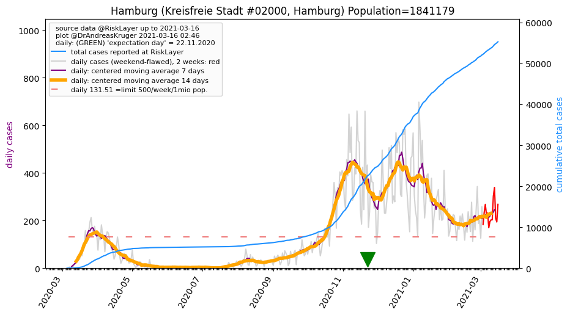
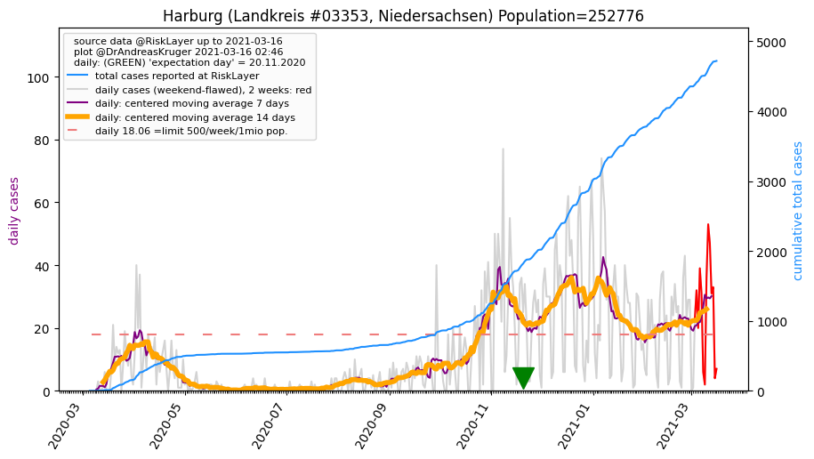
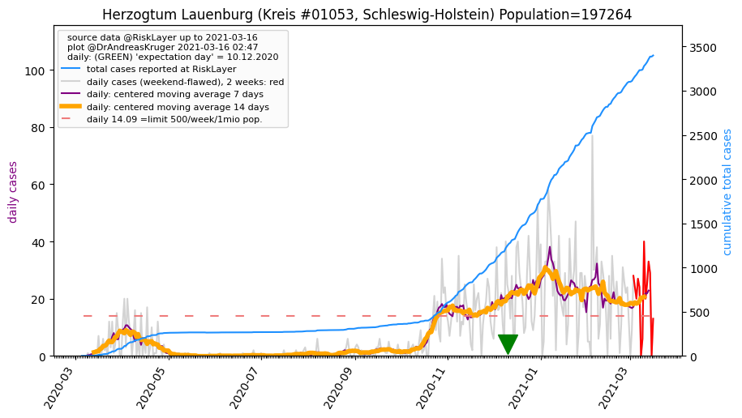
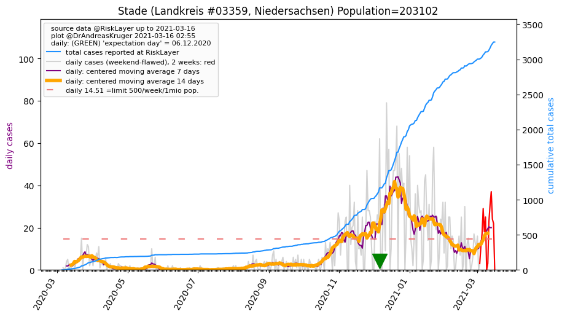
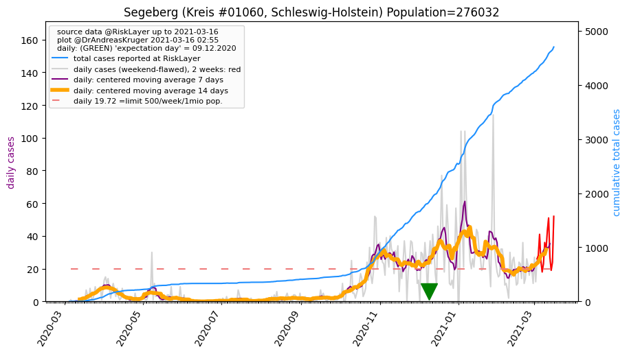
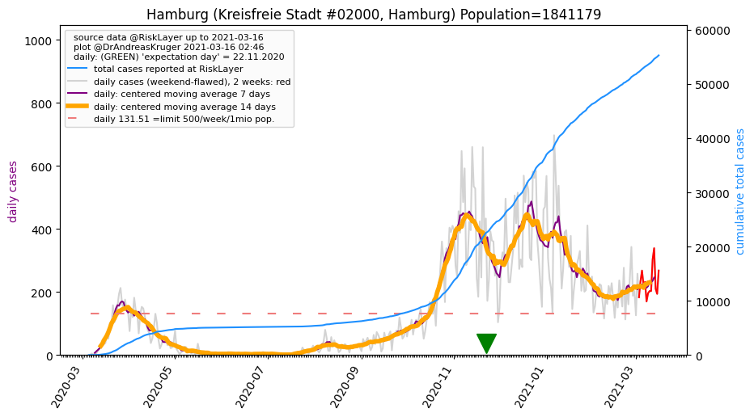
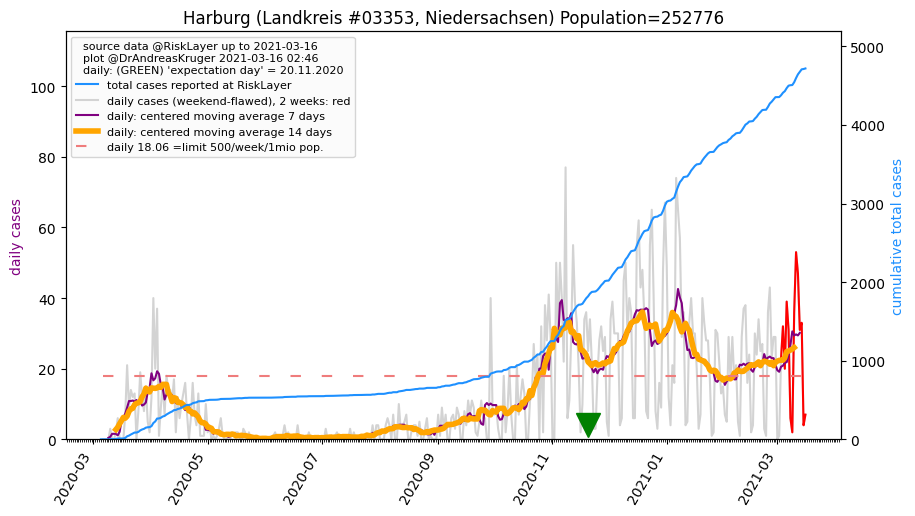
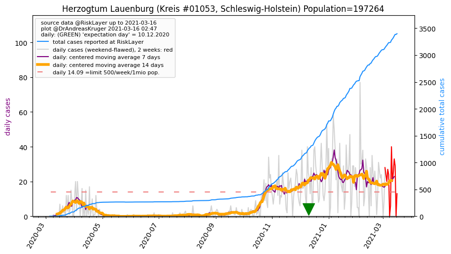
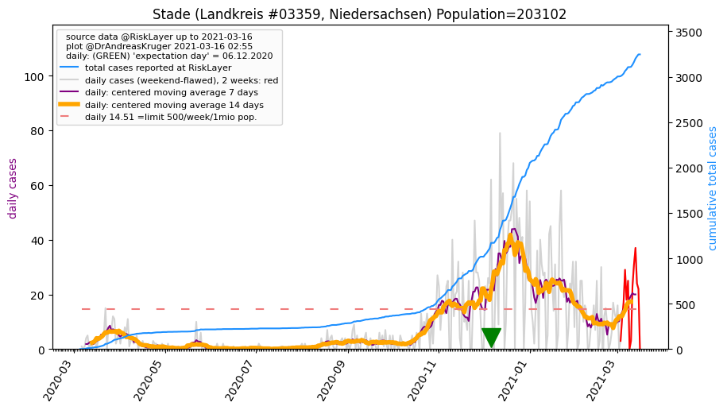
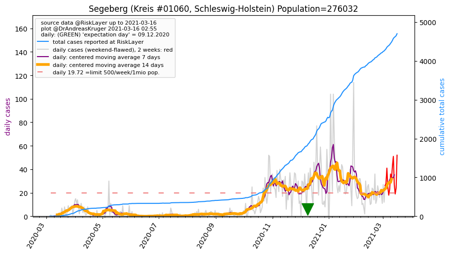

")
")



| Hamburg_KS (0.0 km)  |
Harburg_LK (26.0 km)  |
Pinneberg_KR (26.8 km) |
| Stormarn_KR (28.3 km) |
Herzogtum Lauenburg_KR (38.8 km)  |
Stade_LK (40.1 km)  |
| Segeberg_KR (42.3 km)  |
All plots are regenerated with new data every night. Beware this temporary hotspot is an experimental page - it might get removed, so please do not link to it. Instead link to project http://tiny.cc/cov19de.